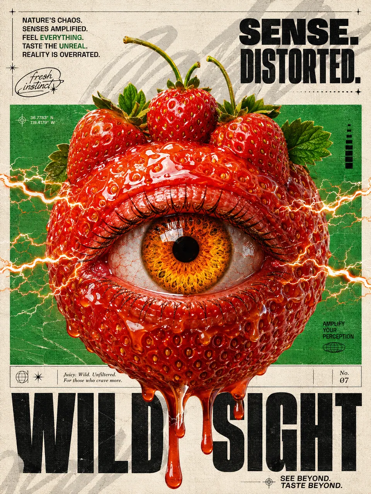
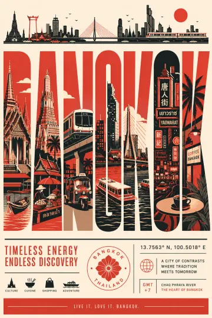
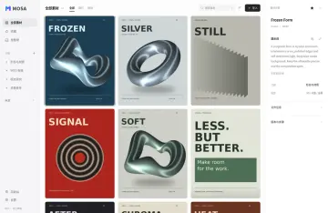

每张图，
GravityPort 把你在 ChatGPT、Gemini、Flow、Codex 里生成的图收回自己的电脑，Prompt、来源和每一轮修改都跟着图走。
所有素材 4,406 待整理 109 收藏 10 回收站 3,352
智能分组
ChatGPT 3,105 Flow 911 Google AI Studio 244 Codex 80 Grok 21 Cowart 18
我的分组
用户中心
所有素材
4,406 个素材
全部类型 最新优先 搜索素材
素材详情
web-chatgpt-c828…
图片 · ChatGPT 网页 · 2026年10月20日
打开预览
PNG 1024 × 1536 2:3 2.1 MB
ChatGPT 添加标签
提示词
Model caption: A dreamy cinematic seascape poster scene: a serene, photorealistic/digital-illustration style sunrise/dawn coastal landscape with a calm, mirror-like ocean…
展开提示词
用户指令
好一些了，但整体太暗，有点压抑。把时间改成黎明前，天空从深蓝渐变到地平线处很淡的粉，海面多一点冷光，丝带和飞鸟保持现在的样子。
版本树 4 查看
Model caption: A cinematic, dreamy, high-detail night seascape…
Model caption: A dramatic, cinematic, surreal night landscape…
好一些了，但整体太暗……
GravityPort 界面，作者本人的素材库。右侧显示选中图片的提示词、用户指令和版本树。
SHEET 01 / 12 · CMYK + 802 FLUO
作者本人的素材库
signal-3
ChatGPT · 网页
1024×1536 · 2:3 · 2026-10-20
用户指令 好一些了，但整体太暗，有点压抑…
一张图
Prompt 留在另一段对话里，用的哪个工具记不清，想要的那一版混在一堆相似的图里。GravityPort 把这些信息和图存在一起。

图片
PNG · 1086 × 1448 · 3:4 · 4.3 MB
来源
ChatGPT 网页，扩展自动收录
时间
2026-08-28 13:01
你的指令
n=2 3:4，实验性商业艺术海报，主视觉媒介为高细节 3D/CG 超现实合成，复古杂志编排结合感官故障美学与高饱和食品视觉。米白纸张底色占大面积，带轻微纤维纹理、扫描颗粒和细横向印刷线……
Prompt
ChatGPT 交给生图模型的版本 Model caption: A stylized graphic poster / magazine cover scene, surreal and hyper-detailed, overall composition: a graphic design illustration with a large central surreal object, editorial typography, and textured background…
色板
参考图
参考图会作为私有附件和图存在一起。
SHEET 02 / 12 K + 4C WILD SIGHT · CHATGPT · 1086×1448 · 2026-08-28
在哪出的图，
GravityPort 不生成图，只把各个工具里生成的图自动收回来。
ChatGPT
鸟太多了，看着有点乱，只留三五只就好。丝带再细一点、更轻盈，像一根发光的丝线。其他保持不变。
演示：四个来源轮流出图，用的是作者的真实作品和原话。
ChatGPT、Gemini、Flow、Google AI Studio 通过浏览器扩展收录；Codex 和 Grok Build CLI 由桌面版直接读取；Cowart 的画布快照在你批准后归档。
SHEET 03 / 12 K FLOOD + 4C + 802 FLUO 7 SOURCES · 4 BROWSER · 3 DESKTOP
所有素材
12 个素材
全部类型 最新优先 搜索素材
撤销
演示 · 不读取你的素材库 试试：把一张图拖到另一张上叠成一摞，或拖动换位置
拖一下，
拖到分组里归档，拖到另一张图上叠成一摞，在摞里拖动调顺序，拖出窗口交给别的软件。刚叠的摞几秒内可以撤销。
框选、多选 在空白处拖出选框，选中一片后一起拖走。 拖进来就导入 把电脑里的图拖进窗口，就收进素材库。 拖出去就能用 从画廊直接拖进任何能接收文件的软件。
SHEET 04 / 12 K + 4C + 802 FLUO IMPOSITION · DRAG TO FILE · STACK · REORDER
改了几轮，
同一段 ChatGPT 对话里的图，按轮次排成版本树。任选两版并排对比，看是哪句话改变了它。
A
R2 · 10-20
B
R3 · 10-20
R2 → R3
B 这一轮，你说：
这一句，让它变了样
演示：作者的一组真实出图，每张下面是那一轮的原话。
SHEET 05 / 12 K FLOOD + 4C + 802 FLUO SIGNAL · 4 ROUNDS · 2026-10-20
不用动手，
图一进库就按来源归类；同一段对话里出的图自动叠成一摞，在画廊里只占一格。
智能分组 按来源自动归类：ChatGPT、Gemini、Flow、Google AI Studio、Codex、Grok、Cowart，有图的来源才会显示。 自动堆叠 同一段对话、同一个 Flow 项目或同一个 Codex 任务的图自动叠成一摞。你拆出或解散过的不会再被叠回，起过名的摞保留名字。
演示：作者的两段 ChatGPT 对话，5 张同系列海报和改了 4 轮的灯塔 再放一次
SHEET 06 / 12 K + 4C SMART GROUPS · AUTO STACK
也让 AI 代理
GravityPort 内置 MCP 服务器。Codex 等 AI 代理可以直接在你的本地素材库里搜图、读 Prompt、查版本和生成记录。
把 10 月 20 号做的那组茶主题系列海报都找出来。
asset_search {
"query" : "tea poster" ,
"createdAfter" : "2026-10-20T00:00-07:00" ,
"createdBefore" : "2026-10-21T00:00-07:00" ,
"limit" : 20
}
11 个结果 · 同一段 ChatGPT 对话 · 10-20
示意 · 参数和工具名与真实 MCP 服务器一致
SHEET 07 / 12 K FLOOD + 802 FLUO MCP · ASSET_SEARCH
素材库，
没有账号，没有云端，不同步，不上传。原图、Prompt 和来源都存在你选的文件夹里。
一个文件夹
GravityPort Library/
├─ assets/default/
│ ├─ original/ 原图
│ ├─ previews/ 预览
│ └─ thumbnails/ 缩略图
├─ reference-attachments/ 参考图
└─ 数据库 Prompt、来源、版本
删错了，90 天内都能找回
hangzhou.png 还剩 89 天 
bangkok-b.png 还剩 61 天 
less-but-better.png 还剩 3 天
删除的图在回收站保留 90 天，每张都有倒计时；刚删完还能直接撤销。
桌面版自动联网只做两件事：
检查更新，以及每天最多一次的匿名活跃信号（随机安装 ID、版本、系统和芯片架构）。都不含素材、Prompt、文件名或路径。活跃信号可以关闭，方法见
隐私政策 。
SHEET 08 / 12 K + 802 FLUO LOCAL · NO ACCOUNT · 90-DAY TRASH
SHEET 09 / 12 802 FLUO FLOOD + K FREE
macOS
Apple 芯片（M 系列）· DMG
—
下载 macOS 版
Windows 10 / 11
x64 · 便携 ZIP
—
SHA-256 复制
下载 Windows 版
浏览器扩展（可选）
Chrome / Chromium · ZIP · 开发者模式加载
—
下载扩展
第一次打开
macOS 先打开一次，看到提示点「完成」；再到「系统设置 → 隐私与安全性」点「仍要打开」。只需一次。 Windows 如果提示「Windows 已保护你的电脑」，点「更多信息 → 仍要运行」。 扩展 先打开桌面版，再加载扩展，两边会自动配对。在扩展设置里勾上「发现新图时自动入库」。 完整安装步骤
SHEET 10 / 12 K FLOOD + 802 FLUO OK TO PRINT
四步装好
扩展负责把网页里生成的图送进你电脑上的 GravityPort，需要在 Chrome / Chromium 的开发者模式下加载。
01 下载并解压 ZIP 在上方下载区下载扩展 ZIP，解压到一个固定的文件夹。不要直接从压缩包里加载。
02 打开扩展管理页 在地址栏输入 chrome://extensions，打开右上角的「开发者模式」。
03 加载解压后的文件夹 点「加载已解压的扩展程序」，选中解压出的文件夹。
04 打开 GravityPort，测试连接 先打开桌面版，再打开扩展设置页，扩展会自动找到 GravityPort 并配对。勾上「发现新图时自动入库」，点「保存设置」，再点「测试连接」，提示成功就能用了。
选对文件夹了吗
选中的文件夹第一层应该能直接看到这三个文件：
manifest.jsonbackground.jsoptions.html
连不上时先检查
GravityPort 桌面版已经打开。
在扩展设置页再点一次「测试连接」。
更新扩展后，在扩展管理页点刷新。
仍然不行，就依次重启 GravityPort 和浏览器。
SHEET 11 / 12 K + 802 FLUO WEB CAPTURE · INSTALL
常见问题
要注册账号吗？ 不用。GravityPort 没有账号，也没有云端。
我的图会被传到别的地方吗？ 不会。素材库只在你的电脑上。桌面版自动联网只用于检查更新和每天最多一次的匿名活跃信号，都不含素材、Prompt、文件名或路径。
电脑里已经有的图，能放进来吗？ 能，拖进窗口就能导入。GravityPort 不会自己扫描「下载」或「桌面」文件夹。
支持哪些系统？ Apple 芯片的 Mac，以及 Windows 10/11。
遇到问题怎么反馈？ 在 App 的「设置 → 反馈」里发送，可以附上已脱敏、发送前能完整查看的诊断日志。也可以 加交流群 。
SHEET 12 / 12 K QUESTIONS